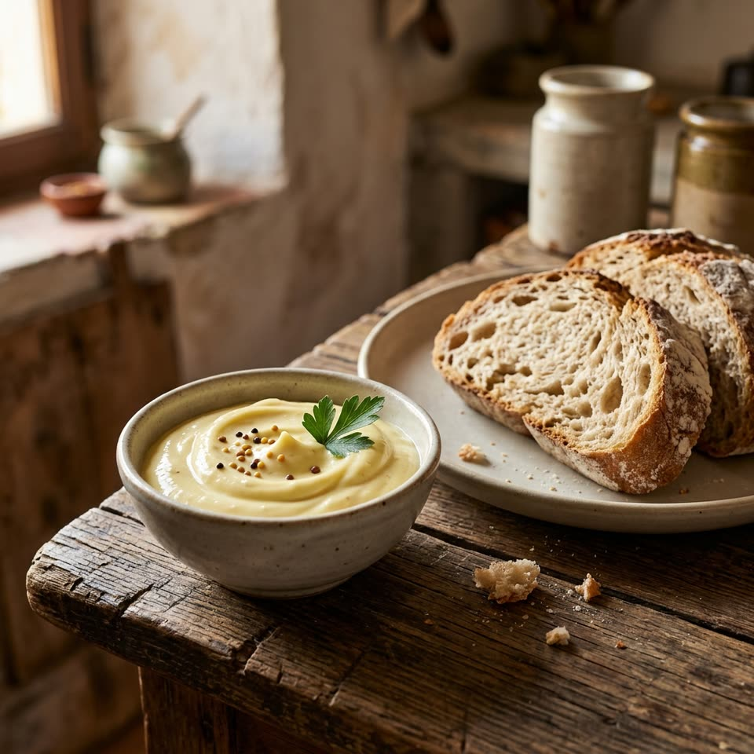

Гірчичний айолі
Кремовий соус із жовтків, зернистої гірчиці та часнику, який збивається на суміші оливкової та рафінованої олії.

Алергени
Містить
- Яйця
- Гірчиця
Може містити (залежить від марки)
- Сульфіти
Містить яйце (сирі жовтки) і гірчицю. У гірчиці та оцті можуть бути сульфіти — перевірте етикетку.
Інгредієнти
Приготування
Збийте занурювальним блендером усі інгредієнти, крім олій, до однорідності.
Змішайте обидві олії в глечику.
Тонкою цівкою вливайте олію, не припиняючи збивати, доки соус не стане густим і гладким.
Зберігайте в холодильнику до 3 днів.
Корисно знати. У соусі сирі жовтки: не подавайте його вагітним, маленьким дітям, літнім людям і тим, у кого ослаблений імунітет, якщо не використовуєте пастеризовані яйця.
До столу. Дуже добрий із цибулевими кільцями.